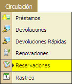
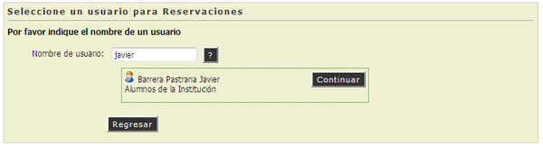
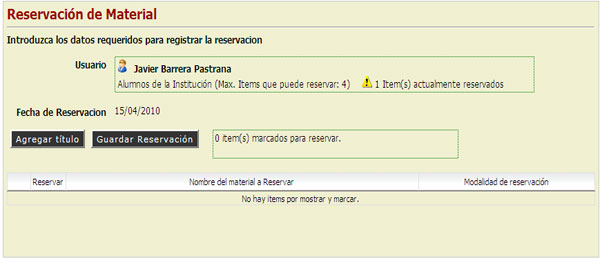
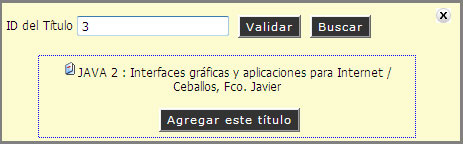
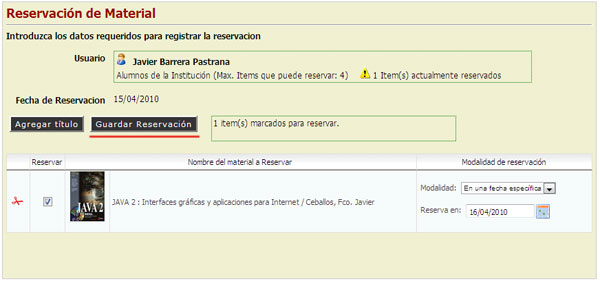
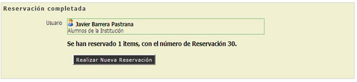

2.5. Reservaciones
En esta opción el Administrador del Sistema podrá realizar el Trámite de Reservaciones del Material a una Fecha específica y será avisado por un E-mail a los Usuarios Resgistrados en la Institución.
REQUISITO: Para realizar una Renovación deberá contar con un Nombre de Usuario.

- Escribir el Nombre de Usuario, Teclee [Enter].
- Si el usuario no existe el sistema mostrará un Mensaje de Alerta ("El usuario no fue encontrado").
- Si el usuario existe, el sistema mostrará el Nombre Completo del Usuario. (Continuar Paso No. 2)
- Hcer "Clic" en la opción [Continuar].

- Aparecerá una pantalla mostrando los datos requeridos del Usuario, Sanciones, Restricciones y número de Reservas actuales.

- Hacer "Clic" en la opción [Agregar Título].
- Escribir o Buscar el ID del Título a Reservar. (NOTA: El ID del Título es un Dato Numérico, No Carácater).
- Hacer "Clic" en la opción [Validar].
- Si el ID del Título no fue encontrado, el Sistema mostrará un Mensaje de Alerta.
- Si el ID del Título fue encontrado, el Sistema mostrará las Características del Material. (Continuar Paso No. 7)

- Hacer "Clic" en la opción [Agregar este Título].
- El Sistema automáticamente seleccionará el Material a Reservar.
- Seleccionar el Modo de Reservación.
- En Lista de Espera: El Sistema pondrá el material en Status de Espera y enviará una notificación de disponibilidad del Material al usuario por vía E-mail.
- En Fecha Específica: El Sistema Validará que el Material que se desea Reservar este disponible para la Fecha Especificada o mostrará las fechas disponibles.
- Hacer "Clic" en la opción [Guardar Reservación].

- El Sistema mostrará un mensaje de alerta que indicará que la Reservación fué Completada.

NOTA: El Botón con el Símbolo de Interrogación (?) , puede ayudarnos a Localizar o Consultar un Usuario de la Institución o un Ítem de un Material.